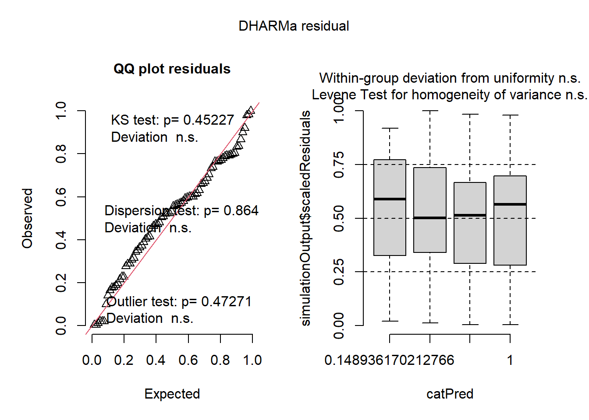

library(tidyverse)
library(readxl)
library(gsheet)
library(DT)
library(performance)
library(DHARMa)
library(multcomp)
library(multcompView)
library(emmeans)
library(MASS)
library(AgroR)
library(drc)
library(corrplot)Projeto Final
Tirar o boxplot e trocar por jitter + errobar (desvio padrão) –> poucas repetições Anova só com o grupo significativo (só tratamentou ou dose, trabalhar só com um fator) Dose usar como repetições por exemplo Sem regressão –> considerar como categorico, não continuo Transformar log para a dose (por ser exponencial) Talvez montar apresentação Powwerpoint –> Muitos dados
Pacotes utilizados
Antes de dar o início ao nosso projeto, segue a lista abaixo de todos os pacotes que foram carregados previamente e utilizados durante a nossa análise de dados.
Importação e Visualização do conjunto de dados
O primeiro passo para qualquer análise de dados é a importação dos dados que serão trabalhados. O nosso conjunto de dados foi importado por meio de um arquivo Excel (.xlsx) através da função read_excel() do pacote readxl. O nome atribuído ao data frame foi controle.
controle <- read_excel("Controle biológico.xlsx")
controle# A tibble: 80 × 7
Trat Dose Rep MPAS MRF ovos ovosg
<chr> <dbl> <dbl> <dbl> <dbl> <dbl> <dbl>
1 A 0 1 22.4 69 121250 1757.
2 A 0 2 10.9 49.2 49000 996.
3 A 0 3 3.8 18.8 26000 1383.
4 A 0 4 11.9 57.3 99000 1728.
5 A 0 5 21.6 65.1 96000 1475.
6 A 1000 1 27 68.4 143000 2091.
7 A 1000 2 9.4 50.4 63000 1250
8 A 1000 3 21.8 46.7 35000 749.
9 A 1000 4 5.2 19.7 17500 888.
10 A 1000 5 15.5 64.5 50000 775.
# ℹ 70 more rowsAnálise exploratória (visualização dos dados)
Gráficos Boxplot usando “Dose” como fator e agrupando “Tratamento” por meio do facet_wrap()
#Massa da parte aérea seca (MPAS)
controle |>
ggplot(aes(factor(Dose), `MPAS`, color = factor(Dose)))+
geom_boxplot()+
facet_wrap(~Trat)#Massa da raiz fresca (MRF)
controle |>
ggplot(aes(factor(Dose), `MRF`, color = factor(Dose)))+
geom_boxplot()+
facet_wrap(~Trat)
#Número de ovos (ovos)
controle |>
ggplot(aes(factor(Dose), ovos, color = factor(Dose)))+
geom_boxplot()+
facet_wrap(~Trat)#Ovos/g (ovosg)
controle |>
ggplot(aes(factor(Dose), `ovosg`, color = factor(Dose)))+
geom_boxplot()+
facet_wrap(~Trat)Gráficos Boxplot usando “Tratamento” como fator e agrupando “Dose” por meio do facet_wrap()
#Massa da parte aérea seca (MPAS)
controle |>
ggplot(aes(Trat, `MPAS`, color = factor(Trat)))+
geom_boxplot()+
facet_wrap(~Dose)#Massa da raiz fresca (MRF)
controle |>
ggplot(aes(Trat, `MRF`, color = factor(Trat)))+
geom_boxplot()+
facet_wrap(~Dose)#Número de ovos (ovos)
controle |>
ggplot(aes(Trat, ovos, color = factor(Trat)))+
geom_boxplot()+
facet_wrap(~Dose)#Ovos/g (ovosg)
controle |>
ggplot(aes(Trat, `ovosg`, color = factor(Trat)))+
geom_boxplot()+
facet_wrap(~Dose)Modelo fatorial (2-way ANOVA)
##Análise de variância da variável “Massa da parte aérea seca” (MPAS)
mf <- lm(MPAS ~ Trat*factor(Dose),
data = controle)
mf
Call:
lm(formula = MPAS ~ Trat * factor(Dose), data = controle)
Coefficients:
(Intercept) TratB TratC
1.412e+01 8.445e-15 -5.123e-16
TratD factor(Dose)1000 factor(Dose)10000
6.091e-15 1.660e+00 -4.620e+00
factor(Dose)1e+05 TratB:factor(Dose)1000 TratC:factor(Dose)1000
-1.460e+00 -2.800e+00 -5.500e+00
TratD:factor(Dose)1000 TratB:factor(Dose)10000 TratC:factor(Dose)10000
8.640e+00 6.220e+00 1.024e+01
TratD:factor(Dose)10000 TratB:factor(Dose)1e+05 TratC:factor(Dose)1e+05
1.242e+01 5.820e+00 7.780e+00
TratD:factor(Dose)1e+05
5.720e+00 anova(mf)Analysis of Variance Table
Response: MPAS
Df Sum Sq Mean Sq F value Pr(>F)
Trat 3 462.83 154.276 3.8212 0.01393 *
factor(Dose) 3 125.63 41.877 1.0372 0.38218
Trat:factor(Dose) 9 716.19 79.576 1.9710 0.05743 .
Residuals 64 2583.95 40.374
---
Signif. codes: 0 '***' 0.001 '**' 0.01 '*' 0.05 '.' 0.1 ' ' 1summary(mf)
Call:
lm(formula = MPAS ~ Trat * factor(Dose), data = controle)
Residuals:
Min 1Q Median 3Q Max
-11.94 -3.22 -0.08 3.75 11.22
Coefficients:
Estimate Std. Error t value Pr(>|t|)
(Intercept) 1.412e+01 2.842e+00 4.969 5.31e-06 ***
TratB 8.445e-15 4.019e+00 0.000 1.0000
TratC -5.123e-16 4.019e+00 0.000 1.0000
TratD 6.091e-15 4.019e+00 0.000 1.0000
factor(Dose)1000 1.660e+00 4.019e+00 0.413 0.6809
factor(Dose)10000 -4.620e+00 4.019e+00 -1.150 0.2546
factor(Dose)1e+05 -1.460e+00 4.019e+00 -0.363 0.7176
TratB:factor(Dose)1000 -2.800e+00 5.683e+00 -0.493 0.6239
TratC:factor(Dose)1000 -5.500e+00 5.683e+00 -0.968 0.3368
TratD:factor(Dose)1000 8.640e+00 5.683e+00 1.520 0.1334
TratB:factor(Dose)10000 6.220e+00 5.683e+00 1.094 0.2779
TratC:factor(Dose)10000 1.024e+01 5.683e+00 1.802 0.0763 .
TratD:factor(Dose)10000 1.242e+01 5.683e+00 2.185 0.0325 *
TratB:factor(Dose)1e+05 5.820e+00 5.683e+00 1.024 0.3097
TratC:factor(Dose)1e+05 7.780e+00 5.683e+00 1.369 0.1758
TratD:factor(Dose)1e+05 5.720e+00 5.683e+00 1.006 0.3180
---
Signif. codes: 0 '***' 0.001 '**' 0.01 '*' 0.05 '.' 0.1 ' ' 1
Residual standard error: 6.354 on 64 degrees of freedom
Multiple R-squared: 0.3355, Adjusted R-squared: 0.1798
F-statistic: 2.154 on 15 and 64 DF, p-value: 0.01772#Checando as premissas
plot(simulateResiduals(mf)) 
check_normality(mf) #Não possui distribuição normal, no entanto podemos considerar como normal devido ao p-valor ser muito próximo do nível de significância (p = 0.045). Além disso a normalidade é menos importante que a homogeneidade das variânciasWarning: Non-normality of residuals detected (p = 0.045).check_heteroscedasticity(mf)OK: Error variance appears to be homoscedastic (p = 0.430).#Agrupamento dos dados em função da "Dose"
mf_mpas <- emmeans(mf, ~ Trat|Dose)
mf_mpasDose = 0e+00:
Trat emmean SE df lower.CL upper.CL
A 14.1 2.84 64 8.44 19.8
B 14.1 2.84 64 8.44 19.8
C 14.1 2.84 64 8.44 19.8
D 14.1 2.84 64 8.44 19.8
Dose = 1e+03:
Trat emmean SE df lower.CL upper.CL
A 15.8 2.84 64 10.10 21.5
B 13.0 2.84 64 7.30 18.7
C 10.3 2.84 64 4.60 16.0
D 24.4 2.84 64 18.74 30.1
Dose = 1e+04:
Trat emmean SE df lower.CL upper.CL
A 9.5 2.84 64 3.82 15.2
B 15.7 2.84 64 10.04 21.4
C 19.7 2.84 64 14.06 25.4
D 21.9 2.84 64 16.24 27.6
Dose = 1e+05:
Trat emmean SE df lower.CL upper.CL
A 12.7 2.84 64 6.98 18.3
B 18.5 2.84 64 12.80 24.2
C 20.4 2.84 64 14.76 26.1
D 18.4 2.84 64 12.70 24.1
Confidence level used: 0.95 cld(mf_mpas)Dose = 0e+00:
Trat emmean SE df lower.CL upper.CL .group
A 14.1 2.84 64 8.44 19.8 1
C 14.1 2.84 64 8.44 19.8 1
D 14.1 2.84 64 8.44 19.8 1
B 14.1 2.84 64 8.44 19.8 1
Dose = 1e+03:
Trat emmean SE df lower.CL upper.CL .group
C 10.3 2.84 64 4.60 16.0 1
B 13.0 2.84 64 7.30 18.7 1
A 15.8 2.84 64 10.10 21.5 12
D 24.4 2.84 64 18.74 30.1 2
Dose = 1e+04:
Trat emmean SE df lower.CL upper.CL .group
A 9.5 2.84 64 3.82 15.2 1
B 15.7 2.84 64 10.04 21.4 12
C 19.7 2.84 64 14.06 25.4 12
D 21.9 2.84 64 16.24 27.6 2
Dose = 1e+05:
Trat emmean SE df lower.CL upper.CL .group
A 12.7 2.84 64 6.98 18.3 1
D 18.4 2.84 64 12.70 24.1 1
B 18.5 2.84 64 12.80 24.2 1
C 20.4 2.84 64 14.76 26.1 1
Confidence level used: 0.95
P value adjustment: tukey method for comparing a family of 4 estimates
significance level used: alpha = 0.05
NOTE: If two or more means share the same grouping symbol,
then we cannot show them to be different.
But we also did not show them to be the same. plot(cld(mf_mpas))#Agrupamento dos dados em função do "Tratamento"
mf_mpas2 <- emmeans(mf, ~Dose|Trat)
cld(mf_mpas2)Trat = A:
Dose emmean SE df lower.CL upper.CL .group
1e+04 9.5 2.84 64 3.82 15.2 1
1e+05 12.7 2.84 64 6.98 18.3 1
0e+00 14.1 2.84 64 8.44 19.8 1
1e+03 15.8 2.84 64 10.10 21.5 1
Trat = B:
Dose emmean SE df lower.CL upper.CL .group
1e+03 13.0 2.84 64 7.30 18.7 1
0e+00 14.1 2.84 64 8.44 19.8 1
1e+04 15.7 2.84 64 10.04 21.4 1
1e+05 18.5 2.84 64 12.80 24.2 1
Trat = C:
Dose emmean SE df lower.CL upper.CL .group
1e+03 10.3 2.84 64 4.60 16.0 1
0e+00 14.1 2.84 64 8.44 19.8 1
1e+04 19.7 2.84 64 14.06 25.4 1
1e+05 20.4 2.84 64 14.76 26.1 1
Trat = D:
Dose emmean SE df lower.CL upper.CL .group
0e+00 14.1 2.84 64 8.44 19.8 1
1e+05 18.4 2.84 64 12.70 24.1 1
1e+04 21.9 2.84 64 16.24 27.6 1
1e+03 24.4 2.84 64 18.74 30.1 1
Confidence level used: 0.95
P value adjustment: tukey method for comparing a family of 4 estimates
significance level used: alpha = 0.05
NOTE: If two or more means share the same grouping symbol,
then we cannot show them to be different.
But we also did not show them to be the same. plot(cld(mf_mpas2))#Não deu nenhuma diferença estatisticamente significativa entre as diferentes doses, não precisa fazer regressão##Análise de variância da variável “Massa da raiz fresca” (MRF)
mf2 <- lm(MRF ~ Trat*factor(Dose),
data = controle)
mf2
Call:
lm(formula = MRF ~ Trat * factor(Dose), data = controle)
Coefficients:
(Intercept) TratB TratC
5.188e+01 8.106e-14 5.741e-14
TratD factor(Dose)1000 factor(Dose)10000
6.521e-14 -1.940e+00 -3.000e+00
factor(Dose)1e+05 TratB:factor(Dose)1000 TratC:factor(Dose)1000
1.018e+01 3.360e+00 1.126e+01
TratD:factor(Dose)1000 TratB:factor(Dose)10000 TratC:factor(Dose)10000
1.826e+01 2.180e+00 1.498e+01
TratD:factor(Dose)10000 TratB:factor(Dose)1e+05 TratC:factor(Dose)1e+05
3.456e+01 3.920e+00 1.502e+01
TratD:factor(Dose)1e+05
3.180e+00 anova(mf2)Analysis of Variance Table
Response: MRF
Df Sum Sq Mean Sq F value Pr(>F)
Trat 3 2600.7 866.91 3.4914 0.02058 *
factor(Dose) 3 2602.5 867.51 3.4938 0.02052 *
Trat:factor(Dose) 9 2823.2 313.69 1.2634 0.27416
Residuals 64 15891.2 248.30
---
Signif. codes: 0 '***' 0.001 '**' 0.01 '*' 0.05 '.' 0.1 ' ' 1summary(mf2)
Call:
lm(formula = MRF ~ Trat * factor(Dose), data = controle)
Residuals:
Min 1Q Median 3Q Max
-33.08 -8.85 0.75 12.04 32.32
Coefficients:
Estimate Std. Error t value Pr(>|t|)
(Intercept) 5.188e+01 7.047e+00 7.362 4.3e-10 ***
TratB 8.106e-14 9.966e+00 0.000 1.0000
TratC 5.741e-14 9.966e+00 0.000 1.0000
TratD 6.521e-14 9.966e+00 0.000 1.0000
factor(Dose)1000 -1.940e+00 9.966e+00 -0.195 0.8463
factor(Dose)10000 -3.000e+00 9.966e+00 -0.301 0.7644
factor(Dose)1e+05 1.018e+01 9.966e+00 1.021 0.3109
TratB:factor(Dose)1000 3.360e+00 1.409e+01 0.238 0.8123
TratC:factor(Dose)1000 1.126e+01 1.409e+01 0.799 0.4273
TratD:factor(Dose)1000 1.826e+01 1.409e+01 1.296 0.1998
TratB:factor(Dose)10000 2.180e+00 1.409e+01 0.155 0.8776
TratC:factor(Dose)10000 1.498e+01 1.409e+01 1.063 0.2918
TratD:factor(Dose)10000 3.456e+01 1.409e+01 2.452 0.0169 *
TratB:factor(Dose)1e+05 3.920e+00 1.409e+01 0.278 0.7818
TratC:factor(Dose)1e+05 1.502e+01 1.409e+01 1.066 0.2906
TratD:factor(Dose)1e+05 3.180e+00 1.409e+01 0.226 0.8222
---
Signif. codes: 0 '***' 0.001 '**' 0.01 '*' 0.05 '.' 0.1 ' ' 1
Residual standard error: 15.76 on 64 degrees of freedom
Multiple R-squared: 0.3356, Adjusted R-squared: 0.1799
F-statistic: 2.155 on 15 and 64 DF, p-value: 0.01768#Checando as premissas
plot(simulateResiduals(mf2)) check_normality(mf2)OK: residuals appear as normally distributed (p = 0.058).check_heteroscedasticity(mf2)OK: Error variance appears to be homoscedastic (p = 0.213).#Agrupamento dos dados em função da "Dose"
mf_mrf <- emmeans(mf2, ~ Trat|Dose)
mf_mrfDose = 0e+00:
Trat emmean SE df lower.CL upper.CL
A 51.9 7.05 64 37.8 66.0
B 51.9 7.05 64 37.8 66.0
C 51.9 7.05 64 37.8 66.0
D 51.9 7.05 64 37.8 66.0
Dose = 1e+03:
Trat emmean SE df lower.CL upper.CL
A 49.9 7.05 64 35.9 64.0
B 53.3 7.05 64 39.2 67.4
C 61.2 7.05 64 47.1 75.3
D 68.2 7.05 64 54.1 82.3
Dose = 1e+04:
Trat emmean SE df lower.CL upper.CL
A 48.9 7.05 64 34.8 63.0
B 51.1 7.05 64 37.0 65.1
C 63.9 7.05 64 49.8 77.9
D 83.4 7.05 64 69.4 97.5
Dose = 1e+05:
Trat emmean SE df lower.CL upper.CL
A 62.1 7.05 64 48.0 76.1
B 66.0 7.05 64 51.9 80.1
C 77.1 7.05 64 63.0 91.2
D 65.2 7.05 64 51.2 79.3
Confidence level used: 0.95 cld(mf_mrf)Dose = 0e+00:
Trat emmean SE df lower.CL upper.CL .group
A 51.9 7.05 64 37.8 66.0 1
C 51.9 7.05 64 37.8 66.0 1
D 51.9 7.05 64 37.8 66.0 1
B 51.9 7.05 64 37.8 66.0 1
Dose = 1e+03:
Trat emmean SE df lower.CL upper.CL .group
A 49.9 7.05 64 35.9 64.0 1
B 53.3 7.05 64 39.2 67.4 1
C 61.2 7.05 64 47.1 75.3 1
D 68.2 7.05 64 54.1 82.3 1
Dose = 1e+04:
Trat emmean SE df lower.CL upper.CL .group
A 48.9 7.05 64 34.8 63.0 1
B 51.1 7.05 64 37.0 65.1 1
C 63.9 7.05 64 49.8 77.9 12
D 83.4 7.05 64 69.4 97.5 2
Dose = 1e+05:
Trat emmean SE df lower.CL upper.CL .group
A 62.1 7.05 64 48.0 76.1 1
D 65.2 7.05 64 51.2 79.3 1
B 66.0 7.05 64 51.9 80.1 1
C 77.1 7.05 64 63.0 91.2 1
Confidence level used: 0.95
P value adjustment: tukey method for comparing a family of 4 estimates
significance level used: alpha = 0.05
NOTE: If two or more means share the same grouping symbol,
then we cannot show them to be different.
But we also did not show them to be the same. plot(cld(mf_mrf))#Agrupamento dos dados em função do "Tratamento"
mf_mrf2 <- emmeans(mf2, ~Dose|Trat)
cld(mf_mrf2)Trat = A:
Dose emmean SE df lower.CL upper.CL .group
1e+04 48.9 7.05 64 34.8 63.0 1
1e+03 49.9 7.05 64 35.9 64.0 1
0e+00 51.9 7.05 64 37.8 66.0 1
1e+05 62.1 7.05 64 48.0 76.1 1
Trat = B:
Dose emmean SE df lower.CL upper.CL .group
1e+04 51.1 7.05 64 37.0 65.1 1
0e+00 51.9 7.05 64 37.8 66.0 1
1e+03 53.3 7.05 64 39.2 67.4 1
1e+05 66.0 7.05 64 51.9 80.1 1
Trat = C:
Dose emmean SE df lower.CL upper.CL .group
0e+00 51.9 7.05 64 37.8 66.0 1
1e+03 61.2 7.05 64 47.1 75.3 1
1e+04 63.9 7.05 64 49.8 77.9 1
1e+05 77.1 7.05 64 63.0 91.2 1
Trat = D:
Dose emmean SE df lower.CL upper.CL .group
0e+00 51.9 7.05 64 37.8 66.0 1
1e+05 65.2 7.05 64 51.2 79.3 12
1e+03 68.2 7.05 64 54.1 82.3 12
1e+04 83.4 7.05 64 69.4 97.5 2
Confidence level used: 0.95
P value adjustment: tukey method for comparing a family of 4 estimates
significance level used: alpha = 0.05
NOTE: If two or more means share the same grouping symbol,
then we cannot show them to be different.
But we also did not show them to be the same. plot(cld(mf_mrf2))#Tratamento D apresentou diferença significativa, parece formar uma parabola --> Fazer regressão??##Análise de variância da variável “Número de ovos” (ovos)
mf3 <- lm(ovos ~ Trat*factor(Dose),
data = controle)
mf3
Call:
lm(formula = ovos ~ Trat * factor(Dose), data = controle)
Coefficients:
(Intercept) TratB TratC
7.825e+04 5.179e-11 -3.606e-11
TratD factor(Dose)1000 factor(Dose)10000
-5.319e-11 -1.655e+04 5.150e+03
factor(Dose)1e+05 TratB:factor(Dose)1000 TratC:factor(Dose)1000
-2.009e+04 -5.255e+04 1.010e+04
TratD:factor(Dose)1000 TratB:factor(Dose)10000 TratC:factor(Dose)10000
-1.670e+04 1.320e+04 1.743e+04
TratD:factor(Dose)10000 TratB:factor(Dose)1e+05 TratC:factor(Dose)1e+05
-8.600e+03 5.793e+04 5.094e+04
TratD:factor(Dose)1e+05
2.537e+04 anova(mf3)Analysis of Variance Table
Response: ovos
Df Sum Sq Mean Sq F value Pr(>F)
Trat 3 5.1808e+09 1726936427 0.8407 0.47659
factor(Dose) 3 2.5283e+10 8427647441 4.1027 0.01001 *
Trat:factor(Dose) 9 1.8756e+10 2084031988 1.0145 0.43813
Residuals 64 1.3147e+11 2054169986
---
Signif. codes: 0 '***' 0.001 '**' 0.01 '*' 0.05 '.' 0.1 ' ' 1summary(mf3)
Call:
lm(formula = ovos ~ Trat * factor(Dose), data = controle)
Residuals:
Min 1Q Median 3Q Max
-87340 -30104 425 20750 126910
Coefficients:
Estimate Std. Error t value Pr(>|t|)
(Intercept) 7.825e+04 2.027e+04 3.861 0.000266 ***
TratB 5.179e-11 2.866e+04 0.000 1.000000
TratC -3.606e-11 2.866e+04 0.000 1.000000
TratD -5.319e-11 2.866e+04 0.000 1.000000
factor(Dose)1000 -1.655e+04 2.866e+04 -0.577 0.565719
factor(Dose)10000 5.150e+03 2.866e+04 0.180 0.857985
factor(Dose)1e+05 -2.009e+04 2.866e+04 -0.701 0.486030
TratB:factor(Dose)1000 -5.255e+04 4.054e+04 -1.296 0.199523
TratC:factor(Dose)1000 1.010e+04 4.054e+04 0.249 0.804044
TratD:factor(Dose)1000 -1.670e+04 4.054e+04 -0.412 0.681747
TratB:factor(Dose)10000 1.320e+04 4.054e+04 0.326 0.745774
TratC:factor(Dose)10000 1.743e+04 4.054e+04 0.430 0.668607
TratD:factor(Dose)10000 -8.600e+03 4.054e+04 -0.212 0.832667
TratB:factor(Dose)1e+05 5.793e+04 4.054e+04 1.429 0.157892
TratC:factor(Dose)1e+05 5.094e+04 4.054e+04 1.256 0.213508
TratD:factor(Dose)1e+05 2.537e+04 4.054e+04 0.626 0.533670
---
Signif. codes: 0 '***' 0.001 '**' 0.01 '*' 0.05 '.' 0.1 ' ' 1
Residual standard error: 45320 on 64 degrees of freedom
Multiple R-squared: 0.2724, Adjusted R-squared: 0.1019
F-statistic: 1.597 on 15 and 64 DF, p-value: 0.0996#Checando as premissas
plot(simulateResiduals(mf3)) check_normality(mf3)OK: residuals appear as normally distributed (p = 0.107).check_heteroscedasticity(mf3) # Variâncias heterogêneasWarning: Heteroscedasticity (non-constant error variance) detected (p = 0.002).#Transformação por Box-Cox
b <- boxcox(lm(controle$ovos+0.1 ~ 1)) #A partir do "b" iremos extrair o lambdalambda <- b$x[which.max(b$y)]
lambda #O valor lambda será usado na transformação[1] 0.5050505controle$ovos2 <- (controle$ovos ^ lambda - 1)/ lambda
controle$ovos2 #Depois de transformado, é feito os mesmos testes [1] 729.4642 460.8815 334.1054 658.2774 648.0955 793.0257 523.5222
[8] 388.5452 273.1980 465.6285 671.6186 842.0837 320.7899 382.8695
[15] 644.6666 684.7057 79.5232 515.0294 315.6557 654.9006 729.4642
[22] 460.8815 334.1054 658.2774 648.0955 208.0510 189.1022 194.6987
[29] 223.0497 161.6174 896.0005 590.9088 697.5528 426.2130 544.1880
[36] 725.6461 1037.1464 351.6120 712.3588 564.1144 729.4642 460.8815
[43] 334.1054 658.2774 648.0955 612.9648 620.1464 465.6285 651.5067
[50] 405.1070 544.8610 609.3430 515.0294 857.8266 734.7771 828.7414
[57] 661.6373 809.7013 627.2478 467.9843 729.4642 460.8815 334.1054
[64] 658.2774 648.0955 531.8826 446.3454 399.6608 456.0864 353.1616
[71] 773.1269 687.9395 388.5452 382.8695 515.0294 851.7391 710.1728
[78] 497.6197 446.3454 388.5452mf3.1 <- lm(ovos2 ~ Trat*factor(Dose),
data = controle)
mf3.1
Call:
lm(formula = ovos2 ~ Trat * factor(Dose), data = controle)
Coefficients:
(Intercept) TratB TratC
5.662e+02 2.850e-13 1.574e-14
TratD factor(Dose)1000 factor(Dose)10000
4.077e-14 -7.738e+01 6.241e+00
factor(Dose)1e+05 TratB:factor(Dose)1000 TratC:factor(Dose)1000
-1.162e+02 -2.935e+02 6.229e+01
TratD:factor(Dose)1000 TratB:factor(Dose)10000 TratC:factor(Dose)10000
-5.136e+01 5.857e+01 7.996e+01
TratD:factor(Dose)10000 TratB:factor(Dose)1e+05 TratC:factor(Dose)1e+05
-2.290e+01 2.282e+02 2.291e+02
TratD:factor(Dose)1e+05
1.289e+02 anova(mf3.1)Analysis of Variance Table
Response: ovos2
Df Sum Sq Mean Sq F value Pr(>F)
Trat 3 121221 40407 1.3532 0.265100
factor(Dose) 3 447282 149094 4.9932 0.003566 **
Trat:factor(Dose) 9 453610 50401 1.6879 0.110307
Residuals 64 1911017 29860
---
Signif. codes: 0 '***' 0.001 '**' 0.01 '*' 0.05 '.' 0.1 ' ' 1summary(mf3.1)
Call:
lm(formula = ovos2 ~ Trat * factor(Dose), data = controle)
Residuals:
Min 1Q Median 3Q Max
-370.44 -105.84 10.83 92.70 358.97
Coefficients:
Estimate Std. Error t value Pr(>|t|)
(Intercept) 5.662e+02 7.728e+01 7.326 4.97e-10 ***
TratB 2.850e-13 1.093e+02 0.000 1.0000
TratC 1.574e-14 1.093e+02 0.000 1.0000
TratD 4.077e-14 1.093e+02 0.000 1.0000
factor(Dose)1000 -7.738e+01 1.093e+02 -0.708 0.4815
factor(Dose)10000 6.241e+00 1.093e+02 0.057 0.9546
factor(Dose)1e+05 -1.162e+02 1.093e+02 -1.063 0.2917
TratB:factor(Dose)1000 -2.935e+02 1.546e+02 -1.899 0.0621 .
TratC:factor(Dose)1000 6.229e+01 1.546e+02 0.403 0.6883
TratD:factor(Dose)1000 -5.136e+01 1.546e+02 -0.332 0.7408
TratB:factor(Dose)10000 5.857e+01 1.546e+02 0.379 0.7060
TratC:factor(Dose)10000 7.996e+01 1.546e+02 0.517 0.6067
TratD:factor(Dose)10000 -2.290e+01 1.546e+02 -0.148 0.8827
TratB:factor(Dose)1e+05 2.282e+02 1.546e+02 1.477 0.1447
TratC:factor(Dose)1e+05 2.291e+02 1.546e+02 1.482 0.1432
TratD:factor(Dose)1e+05 1.289e+02 1.546e+02 0.834 0.4073
---
Signif. codes: 0 '***' 0.001 '**' 0.01 '*' 0.05 '.' 0.1 ' ' 1
Residual standard error: 172.8 on 64 degrees of freedom
Multiple R-squared: 0.3485, Adjusted R-squared: 0.1958
F-statistic: 2.282 on 15 and 64 DF, p-value: 0.01174#Checando novamente as premissas após transformação
plot(simulateResiduals(mf3.1)) check_normality(mf3.1)OK: residuals appear as normally distributed (p = 0.734).check_heteroscedasticity(mf3.1) #Variância homogêneaOK: Error variance appears to be homoscedastic (p = 0.157).controle <- controle |>
mutate(ovos2 = (ovos^lambda - 1)/ lambda)
#Agrupamento dos dados em função da "Dose"
mf_ovos <- emmeans(mf3.1, ~ Trat|Dose)
mf_ovosDose = 0e+00:
Trat emmean SE df lower.CL upper.CL
A 566 77.3 64 411.8 721
B 566 77.3 64 411.8 721
C 566 77.3 64 411.8 721
D 566 77.3 64 411.8 721
Dose = 1e+03:
Trat emmean SE df lower.CL upper.CL
A 489 77.3 64 334.4 643
B 195 77.3 64 40.9 350
C 551 77.3 64 396.7 705
D 437 77.3 64 283.0 592
Dose = 1e+04:
Trat emmean SE df lower.CL upper.CL
A 572 77.3 64 418.0 727
B 631 77.3 64 476.6 785
C 652 77.3 64 498.0 807
D 550 77.3 64 395.1 704
Dose = 1e+05:
Trat emmean SE df lower.CL upper.CL
A 450 77.3 64 295.6 604
B 678 77.3 64 523.8 833
C 679 77.3 64 524.7 833
D 579 77.3 64 424.5 733
Confidence level used: 0.95 cld(mf_ovos)Dose = 0e+00:
Trat emmean SE df lower.CL upper.CL .group
A 566 77.3 64 411.8 721 1
C 566 77.3 64 411.8 721 1
D 566 77.3 64 411.8 721 1
B 566 77.3 64 411.8 721 1
Dose = 1e+03:
Trat emmean SE df lower.CL upper.CL .group
B 195 77.3 64 40.9 350 1
D 437 77.3 64 283.0 592 12
A 489 77.3 64 334.4 643 2
C 551 77.3 64 396.7 705 2
Dose = 1e+04:
Trat emmean SE df lower.CL upper.CL .group
D 550 77.3 64 395.1 704 1
A 572 77.3 64 418.0 727 1
B 631 77.3 64 476.6 785 1
C 652 77.3 64 498.0 807 1
Dose = 1e+05:
Trat emmean SE df lower.CL upper.CL .group
A 450 77.3 64 295.6 604 1
D 579 77.3 64 424.5 733 1
B 678 77.3 64 523.8 833 1
C 679 77.3 64 524.7 833 1
Confidence level used: 0.95
P value adjustment: tukey method for comparing a family of 4 estimates
significance level used: alpha = 0.05
NOTE: If two or more means share the same grouping symbol,
then we cannot show them to be different.
But we also did not show them to be the same. plot(cld(mf_ovos))#Agrupamento dos dados em função do "Tratamento"
mf_ovos2 <- emmeans(mf3.1, ~Dose|Trat)
cld(mf_ovos2)Trat = A:
Dose emmean SE df lower.CL upper.CL .group
1e+05 450 77.3 64 295.6 604 1
1e+03 489 77.3 64 334.4 643 1
0e+00 566 77.3 64 411.8 721 1
1e+04 572 77.3 64 418.0 727 1
Trat = B:
Dose emmean SE df lower.CL upper.CL .group
1e+03 195 77.3 64 40.9 350 1
0e+00 566 77.3 64 411.8 721 2
1e+04 631 77.3 64 476.6 785 2
1e+05 678 77.3 64 523.8 833 2
Trat = C:
Dose emmean SE df lower.CL upper.CL .group
1e+03 551 77.3 64 396.7 705 1
0e+00 566 77.3 64 411.8 721 1
1e+04 652 77.3 64 498.0 807 1
1e+05 679 77.3 64 524.7 833 1
Trat = D:
Dose emmean SE df lower.CL upper.CL .group
1e+03 437 77.3 64 283.0 592 1
1e+04 550 77.3 64 395.1 704 1
0e+00 566 77.3 64 411.8 721 1
1e+05 579 77.3 64 424.5 733 1
Confidence level used: 0.95
P value adjustment: tukey method for comparing a family of 4 estimates
significance level used: alpha = 0.05
NOTE: If two or more means share the same grouping symbol,
then we cannot show them to be different.
But we also did not show them to be the same. plot(cld(mf_ovos2))#Diferença significativa apenas no Tratamento B --> Fazer regressão##Análise de variância da variável “Ovos/g” (ovosg)
mf4 <- lm(ovosg ~ Trat*factor(Dose),
data = controle)
mf4
Call:
lm(formula = ovosg ~ Trat * factor(Dose), data = controle)
Coefficients:
(Intercept) TratB TratC
1.468e+03 -3.518e-14 -1.131e-12
TratD factor(Dose)1000 factor(Dose)10000
-1.419e-12 -3.170e+02 1.651e+02
factor(Dose)1e+05 TratB:factor(Dose)1000 TratC:factor(Dose)1000
-5.025e+02 -9.772e+02 2.897e+01
TratD:factor(Dose)1000 TratB:factor(Dose)10000 TratC:factor(Dose)10000
-4.787e+02 4.100e+02 -1.950e+01
TratD:factor(Dose)10000 TratB:factor(Dose)1e+05 TratC:factor(Dose)1e+05
-7.769e+02 6.491e+02 4.153e+02
TratD:factor(Dose)1e+05
3.506e+02 anova(mf4)Analysis of Variance Table
Response: ovosg
Df Sum Sq Mean Sq F value Pr(>F)
Trat 3 1208226 402742 1.0877 0.360766
factor(Dose) 3 6771820 2257273 6.0963 0.001028 **
Trat:factor(Dose) 9 6925511 769501 2.0782 0.044586 *
Residuals 64 23697362 370271
---
Signif. codes: 0 '***' 0.001 '**' 0.01 '*' 0.05 '.' 0.1 ' ' 1summary(mf4)
Call:
lm(formula = ovosg ~ Trat * factor(Dose), data = controle)
Residuals:
Min 1Q Median 3Q Max
-1202.77 -392.44 6.94 260.04 1508.62
Coefficients:
Estimate Std. Error t value Pr(>|t|)
(Intercept) 1.468e+03 2.721e+02 5.393 1.07e-06 ***
TratB -3.518e-14 3.848e+02 0.000 1.0000
TratC -1.131e-12 3.848e+02 0.000 1.0000
TratD -1.419e-12 3.848e+02 0.000 1.0000
factor(Dose)1000 -3.170e+02 3.848e+02 -0.824 0.4132
factor(Dose)10000 1.651e+02 3.848e+02 0.429 0.6694
factor(Dose)1e+05 -5.025e+02 3.848e+02 -1.306 0.1964
TratB:factor(Dose)1000 -9.772e+02 5.443e+02 -1.795 0.0773 .
TratC:factor(Dose)1000 2.897e+01 5.443e+02 0.053 0.9577
TratD:factor(Dose)1000 -4.787e+02 5.443e+02 -0.880 0.3824
TratB:factor(Dose)10000 4.100e+02 5.443e+02 0.753 0.4541
TratC:factor(Dose)10000 -1.950e+01 5.443e+02 -0.036 0.9715
TratD:factor(Dose)10000 -7.769e+02 5.443e+02 -1.427 0.1583
TratB:factor(Dose)1e+05 6.491e+02 5.443e+02 1.193 0.2374
TratC:factor(Dose)1e+05 4.153e+02 5.443e+02 0.763 0.4482
TratD:factor(Dose)1e+05 3.506e+02 5.443e+02 0.644 0.5218
---
Signif. codes: 0 '***' 0.001 '**' 0.01 '*' 0.05 '.' 0.1 ' ' 1
Residual standard error: 608.5 on 64 degrees of freedom
Multiple R-squared: 0.3861, Adjusted R-squared: 0.2422
F-statistic: 2.684 on 15 and 64 DF, p-value: 0.003183#Checando as premissas
plot(simulateResiduals(mf4)) check_normality(mf4)OK: residuals appear as normally distributed (p = 0.144).check_heteroscedasticity(mf4) #Variância heterogêneaWarning: Heteroscedasticity (non-constant error variance) detected (p < .001).#Transformação por Box-Cox
b2 <- boxcox(lm(controle$ovosg+0.1 ~ 1))lambda2 <- b2$x[which.max(b2$y)]
lambda2[1] 0.6262626controle$ovosg2 <- (controle$ovosg ^ lambda2 - 1)/ lambda2
controle$ovosg2 [1] 170.33689 118.88560 146.38862 168.52370 152.45822 190.09820 137.30970
[8] 99.23391 110.55957 101.38804 156.37812 220.67884 91.78136 103.28525
[15] 213.88081 166.54185 11.31234 121.74162 55.55632 170.85845 170.33689
[22] 118.88560 146.38862 168.52370 152.45822 39.24553 42.35897 42.73560
[29] 38.37365 30.22118 258.43490 248.03633 159.33759 106.69871 134.05353
[36] 182.55218 211.30812 86.37198 165.36517 144.80374 170.33689 118.88560
[43] 146.38862 168.52370 152.45822 172.21167 129.83580 106.72584 147.10459
[50] 97.77101 122.96513 171.62059 104.09197 216.51332 176.61513 156.59968
[57] 144.38360 176.15996 145.36809 102.64011 170.33689 118.88560 146.38862
[64] 168.52370 152.45822 112.19443 95.67674 72.58054 108.07759 69.30303
[71] 139.18090 135.33315 70.54905 73.32064 109.51726 229.84247 151.09387
[78] 102.66252 120.86746 75.49023mf4.1 <- lm(ovosg2 ~ Trat*factor(Dose),
data = controle)
mf4.1
Call:
lm(formula = ovosg2 ~ Trat * factor(Dose), data = controle)
Coefficients:
(Intercept) TratB TratC
1.513e+02 1.519e-13 1.332e-13
TratD factor(Dose)1000 factor(Dose)10000
1.267e-13 -2.360e+01 5.882e+00
factor(Dose)1e+05 TratB:factor(Dose)1000 TratC:factor(Dose)1000
-4.612e+01 -8.913e+01 3.012e+00
TratD:factor(Dose)1000 TratB:factor(Dose)10000 TratC:factor(Dose)10000
-3.615e+01 2.411e+01 1.160e+00
TratD:factor(Dose)10000 TratB:factor(Dose)1e+05 TratC:factor(Dose)1e+05
-5.162e+01 5.288e+01 3.983e+01
TratD:factor(Dose)1e+05
3.079e+01 anova(mf4.1)Analysis of Variance Table
Response: ovosg2
Df Sum Sq Mean Sq F value Pr(>F)
Trat 3 6466 2155.3 1.2665 0.2933933
factor(Dose) 3 38760 12919.9 7.5920 0.0002023 ***
Trat:factor(Dose) 9 44105 4900.6 2.8797 0.0064239 **
Residuals 64 108914 1701.8
---
Signif. codes: 0 '***' 0.001 '**' 0.01 '*' 0.05 '.' 0.1 ' ' 1summary(mf4.1)
Call:
lm(formula = ovosg2 ~ Trat * factor(Dose), data = controle)
Residuals:
Min 1Q Median 3Q Max
-93.89 -26.87 1.14 18.45 93.85
Coefficients:
Estimate Std. Error t value Pr(>|t|)
(Intercept) 1.513e+02 1.845e+01 8.202 1.42e-11 ***
TratB 1.519e-13 2.609e+01 0.000 1.0000
TratC 1.332e-13 2.609e+01 0.000 1.0000
TratD 1.267e-13 2.609e+01 0.000 1.0000
factor(Dose)1000 -2.360e+01 2.609e+01 -0.905 0.3691
factor(Dose)10000 5.882e+00 2.609e+01 0.225 0.8223
factor(Dose)1e+05 -4.612e+01 2.609e+01 -1.768 0.0819 .
TratB:factor(Dose)1000 -8.913e+01 3.690e+01 -2.416 0.0186 *
TratC:factor(Dose)1000 3.012e+00 3.690e+01 0.082 0.9352
TratD:factor(Dose)1000 -3.615e+01 3.690e+01 -0.980 0.3309
TratB:factor(Dose)10000 2.411e+01 3.690e+01 0.653 0.5158
TratC:factor(Dose)10000 1.160e+00 3.690e+01 0.031 0.9750
TratD:factor(Dose)10000 -5.162e+01 3.690e+01 -1.399 0.1666
TratB:factor(Dose)1e+05 5.288e+01 3.690e+01 1.433 0.1567
TratC:factor(Dose)1e+05 3.983e+01 3.690e+01 1.079 0.2844
TratD:factor(Dose)1e+05 3.079e+01 3.690e+01 0.834 0.4071
---
Signif. codes: 0 '***' 0.001 '**' 0.01 '*' 0.05 '.' 0.1 ' ' 1
Residual standard error: 41.25 on 64 degrees of freedom
Multiple R-squared: 0.4506, Adjusted R-squared: 0.3218
F-statistic: 3.499 on 15 and 64 DF, p-value: 0.0002285#Checando novamente as premissas após transformação
plot(simulateResiduals(mf4.1)) check_normality(mf4.1)OK: residuals appear as normally distributed (p = 0.411).check_heteroscedasticity(mf4.1) #Variâncias homogêneasOK: Error variance appears to be homoscedastic (p = 0.077).#Agrupamento dos dados em função da "Dose"
mf_ovosg <- emmeans(mf4.1, ~ Trat|Dose)
mf_ovosgDose = 0e+00:
Trat emmean SE df lower.CL upper.CL
A 151.3 18.4 64 114.46 188.2
B 151.3 18.4 64 114.46 188.2
C 151.3 18.4 64 114.46 188.2
D 151.3 18.4 64 114.46 188.2
Dose = 1e+03:
Trat emmean SE df lower.CL upper.CL
A 127.7 18.4 64 90.86 164.6
B 38.6 18.4 64 1.73 75.4
C 130.7 18.4 64 93.87 167.6
D 91.6 18.4 64 54.71 128.4
Dose = 1e+04:
Trat emmean SE df lower.CL upper.CL
A 157.2 18.4 64 120.35 194.1
B 181.3 18.4 64 144.46 218.2
C 158.4 18.4 64 121.51 195.2
D 105.6 18.4 64 68.72 142.4
Dose = 1e+05:
Trat emmean SE df lower.CL upper.CL
A 105.2 18.4 64 68.35 142.1
B 158.1 18.4 64 121.22 194.9
C 145.0 18.4 64 108.17 181.9
D 136.0 18.4 64 99.14 172.8
Confidence level used: 0.95 cld(mf_ovosg)Dose = 0e+00:
Trat emmean SE df lower.CL upper.CL .group
A 151.3 18.4 64 114.46 188.2 1
D 151.3 18.4 64 114.46 188.2 1
B 151.3 18.4 64 114.46 188.2 1
C 151.3 18.4 64 114.46 188.2 1
Dose = 1e+03:
Trat emmean SE df lower.CL upper.CL .group
B 38.6 18.4 64 1.73 75.4 1
D 91.6 18.4 64 54.71 128.4 12
A 127.7 18.4 64 90.86 164.6 2
C 130.7 18.4 64 93.87 167.6 2
Dose = 1e+04:
Trat emmean SE df lower.CL upper.CL .group
D 105.6 18.4 64 68.72 142.4 1
A 157.2 18.4 64 120.35 194.1 12
C 158.4 18.4 64 121.51 195.2 12
B 181.3 18.4 64 144.46 218.2 2
Dose = 1e+05:
Trat emmean SE df lower.CL upper.CL .group
A 105.2 18.4 64 68.35 142.1 1
D 136.0 18.4 64 99.14 172.8 1
C 145.0 18.4 64 108.17 181.9 1
B 158.1 18.4 64 121.22 194.9 1
Confidence level used: 0.95
P value adjustment: tukey method for comparing a family of 4 estimates
significance level used: alpha = 0.05
NOTE: If two or more means share the same grouping symbol,
then we cannot show them to be different.
But we also did not show them to be the same. plot(cld(mf_ovosg))#Agrupamento dos dados em função do "Tratamento"
mf_ovosg2 <- emmeans(mf4.1, ~Dose|Trat)
cld(mf_ovosg2)Trat = A:
Dose emmean SE df lower.CL upper.CL .group
1e+05 105.2 18.4 64 68.35 142.1 1
1e+03 127.7 18.4 64 90.86 164.6 1
0e+00 151.3 18.4 64 114.46 188.2 1
1e+04 157.2 18.4 64 120.35 194.1 1
Trat = B:
Dose emmean SE df lower.CL upper.CL .group
1e+03 38.6 18.4 64 1.73 75.4 1
0e+00 151.3 18.4 64 114.46 188.2 2
1e+05 158.1 18.4 64 121.22 194.9 2
1e+04 181.3 18.4 64 144.46 218.2 2
Trat = C:
Dose emmean SE df lower.CL upper.CL .group
1e+03 130.7 18.4 64 93.87 167.6 1
1e+05 145.0 18.4 64 108.17 181.9 1
0e+00 151.3 18.4 64 114.46 188.2 1
1e+04 158.4 18.4 64 121.51 195.2 1
Trat = D:
Dose emmean SE df lower.CL upper.CL .group
1e+03 91.6 18.4 64 54.71 128.4 1
1e+04 105.6 18.4 64 68.72 142.4 1
1e+05 136.0 18.4 64 99.14 172.8 1
0e+00 151.3 18.4 64 114.46 188.2 1
Confidence level used: 0.95
P value adjustment: tukey method for comparing a family of 4 estimates
significance level used: alpha = 0.05
NOTE: If two or more means share the same grouping symbol,
then we cannot show them to be different.
But we also did not show them to be the same. plot(cld(mf_ovosg2))
#Diferença significativa apenas para Tratamento BRegressão
Regressão da variável “ovos” em função da “Dose”
controle |>
ggplot(aes(Dose, ovos2))+
geom_jitter(width = 0.1, color = "gray")+
facet_wrap(~Trat)+
stat_summary(fun.data = "mean_cl_boot", color = "blue")+
geom_smooth(method = "lm", se = F) #se = F tira a banda de confiançacontrole |>
ggplot(aes(Dose, ovos2))+
geom_jitter(width = 0.1, color = "gray")+
facet_wrap(~Trat)+
stat_summary(fun.data = "mean_cl_boot", color = "blue")+
geom_smooth(se = F)
##Tratamento A
trat1 <- controle |>
filter(Trat == "A")
#Gráfico sem ajustar modelo
trat1 |>
ggplot(aes(Dose, ovos2))+
geom_point()+
geom_smooth(se = F)
#Gráfico ajustando modelo linear e quadrático
trat1 |>
ggplot(aes(Dose, ovos2))+
geom_point()+
geom_smooth(method = lm, se = FALSE,
formula = y ~poly(x,2))+ #Formula par ajustar os dados, modelo quadrático
geom_smooth(method = lm, se = F, color = "red") #Modelo linear#Gráfico ajustando modelo cúbico
trat1 |>
ggplot(aes(Dose, ovos2))+
geom_point()+
geom_smooth(method = lm, se = FALSE,
formula = y ~poly(x,3)) #Formula par ajustar os dados, modelo cúbico
trat1$Dose2 <- trat1$Dose^2
trat1$Dose3 <- trat1$Dose^3
#Primeira ordem - modelo linear
lm1 <- lm(ovos2 ~ Dose,
data = trat1)
summary(lm1)
Call:
lm(formula = ovos2 ~ Dose, data = trat1)
Residuals:
Min 1Q Median 3Q Max
-373.6 -153.4 20.8 148.2 306.5
Coefficients:
Estimate Std. Error t value Pr(>|t|)
(Intercept) 5.448e+02 5.385e+01 10.117 7.47e-09 ***
Dose -9.168e-04 1.072e-03 -0.856 0.403
---
Signif. codes: 0 '***' 0.001 '**' 0.01 '*' 0.05 '.' 0.1 ' ' 1
Residual standard error: 200.8 on 18 degrees of freedom
Multiple R-squared: 0.03908, Adjusted R-squared: -0.01431
F-statistic: 0.732 on 1 and 18 DF, p-value: 0.4035#Segunda ordem ou quadrático - modelo quadrático
lm1.2 <- lm(ovos2 ~ Dose + Dose2,
data = trat1)
summary(lm1.2)
Call:
lm(formula = ovos2 ~ Dose + Dose2, data = trat1)
Residuals:
Min 1Q Median 3Q Max
-370.48 -153.84 28.24 148.48 274.44
Coefficients:
Estimate Std. Error t value Pr(>|t|)
(Intercept) 5.276e+02 6.881e+01 7.667 6.48e-07 ***
Dose 4.536e-03 1.312e-02 0.346 0.734
Dose2 -5.312e-08 1.274e-07 -0.417 0.682
---
Signif. codes: 0 '***' 0.001 '**' 0.01 '*' 0.05 '.' 0.1 ' ' 1
Residual standard error: 205.5 on 17 degrees of freedom
Multiple R-squared: 0.04881, Adjusted R-squared: -0.06309
F-statistic: 0.4362 on 2 and 17 DF, p-value: 0.6535#Terceira ordem - modelo cúbico
lm1.3 <- lm(ovos2 ~ Dose + Dose2 + Dose3,
data = trat1)
summary(lm1.3)
Call:
lm(formula = ovos2 ~ Dose + Dose2 + Dose3, data = trat1)
Residuals:
Min 1Q Median 3Q Max
-370.4 -148.1 49.9 115.2 304.2
Coefficients:
Estimate Std. Error t value Pr(>|t|)
(Intercept) 5.662e+02 9.363e+01 6.047 1.69e-05 ***
Dose -8.693e-02 1.478e-01 -0.588 0.565
Dose2 9.632e-06 1.559e-05 0.618 0.545
Dose3 -8.775e-11 1.412e-10 -0.621 0.543
---
Signif. codes: 0 '***' 0.001 '**' 0.01 '*' 0.05 '.' 0.1 ' ' 1
Residual standard error: 209.4 on 16 degrees of freedom
Multiple R-squared: 0.07122, Adjusted R-squared: -0.1029
F-statistic: 0.409 on 3 and 16 DF, p-value: 0.7487#COmparação dos 3 modelos (menor valor = melhor modelo)
AIC(lm1) #Menor valor[1] 272.7361AIC(lm1.2) [1] 274.5324AIC(lm1.3)[1] 276.0555#Gráfico dos modelos com o valor de R-quadrado
with(trat1, polynomial(Dose, ovos2, grau = 1))
----------------------------------------------------
Regression Models
----------------------------------------------------
Estimate Std. Error t value Pr(>|t|)
(Intercept) 5.447697e+02 53.847714925 10.1168590 7.466513e-09
trat -9.167714e-04 0.001071557 -0.8555512 4.034912e-01
----------------------------------------------------
Deviations from regression
----------------------------------------------------
Df SSq MSQ F p-value
Linear 1 29503.64 29503.64 0.6731591 0.4240079
Deviation 2 24273.26 12136.63 0.2769110 0.7616818
Residual 16 701258.11 43828.63 [[1]]with(trat1, polynomial(Dose, ovos2, grau = 2)) #diferente do AIC, deu maior que o linear
----------------------------------------------------
Regression Models
----------------------------------------------------
Estimate Std. Error t value Pr(>|t|)
(Intercept) 5.275921e+02 6.881179e+01 7.6671762 6.477688e-07
trat 4.536371e-03 1.311969e-02 0.3457680 7.337590e-01
I(trat^2) -5.312230e-08 1.273592e-07 -0.4171062 6.818205e-01
----------------------------------------------------
Deviations from regression
----------------------------------------------------
Df SSq MSQ F p-value
Linear 1 29503.644 29503.644 0.6731591 0.4240079
Quadratic 1 7349.853 7349.853 0.1676952 0.6875982
Deviation 1 16923.409 16923.409 0.3861268 0.5430950
Residual 16 701258.108 43828.632 [[1]]with(trat1, polynomial(Dose, ovos2, grau = 3)) #R2 = 1, teoricamente melhor, mas superestima o número de ovos
----------------------------------------------------
Regression Models
----------------------------------------------------
Estimate Std. Error t value Pr(>|t|)
(Intercept) 5.661648e+02 9.362546e+01 6.0471247 1.694633e-05
trat -8.692560e-02 1.477945e-01 -0.5881520 5.646407e-01
I(trat^2) 9.632450e-06 1.558746e-05 0.6179615 5.452971e-01
I(trat^3) -8.774814e-11 1.412124e-10 -0.6213910 5.430950e-01
----------------------------------------------------
Deviations from regression
----------------------------------------------------
Df SSq MSQ F p-value
Linear 1 2.950364e+04 29503.644 0.6731591 0.4240079
Quadratic 1 7.349853e+03 7349.853 0.1676952 0.6875982
Cubic 1 1.692341e+04 16923.409 0.3861268 0.5430950
Deviation 0 8.614734e-09 -Inf -Inf NaN
Residual 16 7.012581e+05 43828.632 [[1]]#Testando modelo não-linear --> NÃO DEU CERTO
drc1 <- drm(ovos2 ~ Dose, data = trat1, #drm é uma função que ajusta modelo não-linear
fct = LL.3()) #LL.3 = log-logistic de 3 parâmetros
AIC(drc1) #Para comparar diferentes modelos (fct), o W1.3 pode ser melhor para alguns isolados[1] 274.6684plot(drc1) #Para visualizar se o ajuste está bomED(drc1, 50, interval = "delta") #Estima o EC50 no valor 0.55 | O interval = delta fornece o intervalod de confiança
Estimated effective doses
Estimate Std. Error Lower Upper
e:1:50 187024 371461 -596689 970738drc1.1 <- drm(ovos2 ~ Dose, data = trat1, #drm é uma função que ajusta modelo não-linear
fct = W1.3()) #LL.3 = log-logistic de 3 parâmetros
AIC(drc1.1) #Para comparar diferentes modelos (fct), o W1.3 pode ser melhor para alguns isolados[1] 274.7442plot(drc1.1)Tratamento B
trat2 <- controle |>
filter(Trat == "B")
#Gráfico sem ajustar modelo
trat2 |>
ggplot(aes(Dose, ovos2))+
geom_point()+
geom_smooth(se = F)#Gráfico ajustando modelo linear e quadrático
trat2 |>
ggplot(aes(Dose, ovos2))+
geom_point()+
geom_smooth(method = lm, se = FALSE,
formula = y ~poly(x,2))+
geom_smooth(method = lm, se = F, color = "red")#Gráfico ajustando modelo cúbico
trat2 |>
ggplot(aes(Dose, ovos2))+
geom_point()+
geom_smooth(method = lm, se = FALSE,
formula = y ~poly(x,3))trat2$Dose2 <- trat2$Dose^2
trat2$Dose3 <- trat2$Dose^3
#Primeira ordem
lm2 <- lm(ovos2 ~ Dose,
data = trat2)
summary(lm2)
Call:
lm(formula = ovos2 ~ Dose, data = trat2)
Residuals:
Min 1Q Median 3Q Max
-339.58 -234.10 15.52 199.64 420.98
Coefficients:
Estimate Std. Error t value Pr(>|t|)
(Intercept) 4.510e+02 6.348e+01 7.104 1.27e-06 ***
Dose 2.402e-03 1.263e-03 1.901 0.0734 .
---
Signif. codes: 0 '***' 0.001 '**' 0.01 '*' 0.05 '.' 0.1 ' ' 1
Residual standard error: 236.7 on 18 degrees of freedom
Multiple R-squared: 0.1672, Adjusted R-squared: 0.121
F-statistic: 3.615 on 1 and 18 DF, p-value: 0.0734#Segunda ordem ou quadrático
lm2.2 <- lm(ovos2 ~ Dose + Dose2,
data = trat2)
summary(lm2.2)
Call:
lm(formula = ovos2 ~ Dose + Dose2, data = trat2)
Residuals:
Min 1Q Median 3Q Max
-326.77 -185.43 -31.34 134.29 358.76
Coefficients:
Estimate Std. Error t value Pr(>|t|)
(Intercept) 3.797e+02 7.625e+01 4.980 0.000114 ***
Dose 2.503e-02 1.454e-02 1.721 0.103328
Dose2 -2.204e-07 1.411e-07 -1.562 0.136796
---
Signif. codes: 0 '***' 0.001 '**' 0.01 '*' 0.05 '.' 0.1 ' ' 1
Residual standard error: 227.8 on 17 degrees of freedom
Multiple R-squared: 0.2717, Adjusted R-squared: 0.186
F-statistic: 3.171 on 2 and 17 DF, p-value: 0.06754#Terceira ordem
lm2.3 <- lm(ovos2 ~ Dose + Dose2 + Dose3,
data = trat2)
summary(lm2.3)
Call:
lm(formula = ovos2 ~ Dose + Dose2 + Dose3, data = trat2)
Residuals:
Min 1Q Median 3Q Max
-326.56 -91.41 6.07 70.42 358.97
Coefficients:
Estimate Std. Error t value Pr(>|t|)
(Intercept) 5.662e+02 7.799e+01 7.260 1.91e-06 ***
Dose -4.170e-01 1.231e-01 -3.387 0.00376 **
Dose2 4.659e-05 1.298e-05 3.588 0.00246 **
Dose3 -4.241e-10 1.176e-10 -3.605 0.00237 **
---
Signif. codes: 0 '***' 0.001 '**' 0.01 '*' 0.05 '.' 0.1 ' ' 1
Residual standard error: 174.4 on 16 degrees of freedom
Multiple R-squared: 0.5982, Adjusted R-squared: 0.5228
F-statistic: 7.94 on 3 and 16 DF, p-value: 0.001818#Comparação dos 3 modelos
AIC(lm2)[1] 279.3208AIC(lm2.2) [1] 278.6397AIC(lm2.3)#DEU O MENOR VALOR[1] 268.7459plot(simulateResiduals(lm2.3))check_normality(lm2.3)OK: residuals appear as normally distributed (p = 0.861).check_heteroscedasticity(lm2.3)Warning: Heteroscedasticity (non-constant error variance) detected (p = 0.043).#Gráfico dos modelos com o valor de R-quadrado
with(trat2, polynomial(Dose, ovos2, grau = 2))
----------------------------------------------------
Regression Models
----------------------------------------------------
Estimate Std. Error t value Pr(>|t|)
(Intercept) 3.797348e+02 7.625306e+01 4.979929 0.0001142803
trat 2.502614e-02 1.453845e-02 1.721376 0.1033280941
I(trat^2) -2.203964e-07 1.411317e-07 -1.561636 0.1367959918
----------------------------------------------------
Deviations from regression
----------------------------------------------------
Df SSq MSQ F p-value
Linear 1 202513.8 202513.8 6.659205 0.020119742
Quadratic 1 126512.6 126512.6 4.160081 0.058255293
Deviation 1 395329.8 395329.8 12.999522 0.002371572
Residual 16 486577.6 30411.1 [[1]]with(trat2, polynomial(Dose, ovos2, grau = 3))
----------------------------------------------------
Regression Models
----------------------------------------------------
Estimate Std. Error t value Pr(>|t|)
(Intercept) 5.661648e+02 7.798859e+01 7.259585 1.909091e-06
trat -4.170290e-01 1.231105e-01 -3.387435 3.758501e-03
I(trat^2) 4.659203e-05 1.298412e-05 3.588386 2.458810e-03
I(trat^3) -4.241054e-10 1.176278e-10 -3.605485 2.371572e-03
----------------------------------------------------
Deviations from regression
----------------------------------------------------
Df SSq MSQ F p-value
Linear 1 2.025138e+05 202513.8 6.659205 0.020119742
Quadratic 1 1.265126e+05 126512.6 4.160081 0.058255293
Cubic 1 3.953298e+05 395329.8 12.999522 0.002371572
Deviation 0 4.121102e-08 -Inf -Inf NaN
Residual 16 4.865776e+05 30411.1 [[1]]#Testando modelo não-linear --> NÃO DEU CERTO
drc2 <- drm(ovos2 ~ Dose, data = trat2,
fct = LL.3())
AIC(drc2)[1] 295.8896plot(drc2)ED(drc2, 50, interval = "delta")
Estimated effective doses
Estimate Std. Error Lower Upper
e:1:50 1829.0 2095.8 -2592.9 6250.8drc2.1 <- drm(ovos2 ~ Dose, data = trat2, #drm é uma função que ajusta modelo não-linear
fct = W1.3()) #LL.3 = log-logistic de 3 parâmetros
AIC(drc2.1) #Para comparar diferentes modelos (fct), o W1.3 pode ser melhor para alguns isolados[1] 295.8896plot(drc2.1)Tratamento C
trat3 <- controle |>
filter(Trat == "C")
#Gráfico sem ajustar modelo
trat3 |>
ggplot(aes(Dose, ovos2))+
geom_point()+
geom_smooth(se = F)#Gráfico ajustando modelo linear e quadrático
trat3 |>
ggplot(aes(Dose, ovos2))+
geom_point()+
geom_smooth(method = lm, se = FALSE,
formula = y ~poly(x,2))+
geom_smooth(method = lm, se = F, color = "red")#Gráfico ajustando modelo cúbico
trat3 |>
ggplot(aes(Dose, ovos2))+
geom_point()+
geom_smooth(method = lm, se = FALSE,
formula = y ~poly(x,3))trat3$Dose2 <- trat3$Dose^2
trat3$Dose3 <- trat3$Dose^3
#Primeira ordem
lm3 <- lm(ovos2 ~ Dose,
data = trat3)
summary(lm3)
Call:
lm(formula = ovos2 ~ Dose, data = trat3)
Residuals:
Min 1Q Median 3Q Max
-250.27 -89.46 21.27 86.72 263.44
Coefficients:
Estimate Std. Error t value Pr(>|t|)
(Intercept) 5.844e+02 3.723e+01 15.695 6.03e-12 ***
Dose 1.001e-03 7.409e-04 1.352 0.193
---
Signif. codes: 0 '***' 0.001 '**' 0.01 '*' 0.05 '.' 0.1 ' ' 1
Residual standard error: 138.8 on 18 degrees of freedom
Multiple R-squared: 0.09213, Adjusted R-squared: 0.04169
F-statistic: 1.827 on 1 and 18 DF, p-value: 0.1933#Segunda ordem ou quadrático
lm3.2 <- lm(ovos2 ~ Dose + Dose2,
data = trat3)
summary(lm3.2)
Call:
lm(formula = ovos2 ~ Dose + Dose2, data = trat3)
Residuals:
Min 1Q Median 3Q Max
-219.99 -100.75 15.46 96.55 206.95
Coefficients:
Estimate Std. Error t value Pr(>|t|)
(Intercept) 5.541e+02 4.622e+01 11.988 1.02e-09 ***
Dose 1.061e-02 8.813e-03 1.204 0.245
Dose2 -9.365e-08 8.555e-08 -1.095 0.289
---
Signif. codes: 0 '***' 0.001 '**' 0.01 '*' 0.05 '.' 0.1 ' ' 1
Residual standard error: 138.1 on 17 degrees of freedom
Multiple R-squared: 0.1519, Adjusted R-squared: 0.05214
F-statistic: 1.523 on 2 and 17 DF, p-value: 0.2465#Terceira ordem
lm3.3 <- lm(ovos2 ~ Dose + Dose2 + Dose3,
data = trat1)
summary(lm3.3)
Call:
lm(formula = ovos2 ~ Dose + Dose2 + Dose3, data = trat1)
Residuals:
Min 1Q Median 3Q Max
-370.4 -148.1 49.9 115.2 304.2
Coefficients:
Estimate Std. Error t value Pr(>|t|)
(Intercept) 5.662e+02 9.363e+01 6.047 1.69e-05 ***
Dose -8.693e-02 1.478e-01 -0.588 0.565
Dose2 9.632e-06 1.559e-05 0.618 0.545
Dose3 -8.775e-11 1.412e-10 -0.621 0.543
---
Signif. codes: 0 '***' 0.001 '**' 0.01 '*' 0.05 '.' 0.1 ' ' 1
Residual standard error: 209.4 on 16 degrees of freedom
Multiple R-squared: 0.07122, Adjusted R-squared: -0.1029
F-statistic: 0.409 on 3 and 16 DF, p-value: 0.7487#Comparando 3 modelos
AIC(lm3) #Menor valor[1] 257.9777AIC(lm3.2) [1] 258.6154AIC(lm3.3)[1] 276.0555#Gráfico dos modelos com o valor de R-quadrado
with(trat3, polynomial(Dose, ovos2, grau = 1))
----------------------------------------------------
Regression Models
----------------------------------------------------
Estimate Std. Error t value Pr(>|t|)
(Intercept) 5.843777e+02 3.723319e+01 15.695075 6.026568e-12
trat 1.001392e-03 7.409315e-04 1.351531 1.932675e-01
----------------------------------------------------
Deviations from regression
----------------------------------------------------
Df SSq MSQ F p-value
Linear 1 35201.55 35201.55 1.7470636 0.2048343
Deviation 2 24498.60 12249.30 0.6079365 0.5565798
Residual 16 322383.67 20148.98 [[1]]with(trat3, polynomial(Dose, ovos2, grau = 2)) #diferente do AIC, deu maior que o linear
----------------------------------------------------
Regression Models
----------------------------------------------------
Estimate Std. Error t value Pr(>|t|)
(Intercept) 5.540955e+02 4.622165e+01 11.987791 1.022022e-09
trat 1.061468e-02 8.812645e-03 1.204482 2.449051e-01
I(trat^2) -9.364871e-08 8.554857e-08 -1.094685 2.889228e-01
----------------------------------------------------
Deviations from regression
----------------------------------------------------
Df SSq MSQ F p-value
Linear 1 35201.549 35201.549 1.74706361 0.2048343
Quadratic 1 22841.707 22841.707 1.13364090 0.3028050
Deviation 1 1656.894 1656.894 0.08223216 0.7779752
Residual 16 322383.674 20148.980 [[1]]with(trat3, polynomial(Dose, ovos2, grau = 3)) #R2 = 1, teoricamente melhor, mas superestima o número de ovos
----------------------------------------------------
Regression Models
----------------------------------------------------
Estimate Std. Error t value Pr(>|t|)
(Intercept) 5.661648e+02 6.348067e+01 8.9186958 1.316807e-07
trat -1.800364e-02 1.002088e-01 -0.1796613 8.596741e-01
I(trat^2) 2.936952e-06 1.056873e-05 0.2778906 7.846552e-01
I(trat^3) -2.745626e-11 9.574598e-11 -0.2867615 7.779752e-01
----------------------------------------------------
Deviations from regression
----------------------------------------------------
Df SSq MSQ F p-value
Linear 1 3.520155e+04 35201.549 1.74706361 0.2048343
Quadratic 1 2.284171e+04 22841.707 1.13364090 0.3028050
Cubic 1 1.656894e+03 1656.894 0.08223216 0.7779752
Deviation 0 2.735760e-09 -Inf -Inf NaN
Residual 16 3.223837e+05 20148.980 [[1]]#Testando modelo não-linear --> NÃO DEU CERTO
drc3 <- drm(ovos2 ~ Dose, data = trat3, #drm é uma função que ajusta modelo não-linear
fct = LL.3()) #LL.3 = log-logistic de 3 parâmetros
AIC(drc3) #Para comparar diferentes modelos (fct), o W1.3 pode ser melhor para alguns isolados[1] 294.2986plot(drc3) #Para visualizar se o ajuste está bomED(drc3, 50, interval = "delta") #Estima o EC50 no valor 0.55 | O interval = delta fornece o intervalod de confiança
Estimated effective doses
Estimate Std. Error Lower Upper
e:1:50 1027 NaN NaN NaNdrc3.1 <- drm(ovos2 ~ Dose, data = trat3, #drm é uma função que ajusta modelo não-linear
fct = W1.3()) #LL.3 = log-logistic de 3 parâmetros
AIC(drc3.1) #Para comparar diferentes modelos (fct), o W1.3 pode ser melhor para alguns isolados[1] 294.2526plot(drc3.1)Tratamento D
trat4 <- controle |>
filter(Trat == "D")
#Gráfico sem ajustar modelo
trat4 |>
ggplot(aes(Dose, ovos2))+
geom_point()+
geom_smooth(se = F)
#Gráfico ajustando modelo linear e quadrático
trat4 |>
ggplot(aes(Dose, ovos2))+
geom_point()+
geom_smooth(method = lm, se = FALSE,
formula = y ~poly(x,2))+
geom_smooth(method = lm, se = F, color = "red")#Gráfico ajustando modelo cúbico
trat4 |>
ggplot(aes(Dose, ovos2))+
geom_point()+
geom_smooth(method = lm, se = FALSE,
formula = y ~poly(x,3))trat4$Dose2 <- trat4$Dose^2
trat4$Dose3 <- trat4$Dose^3
#Primeira ordem
lm4 <- lm(ovos2 ~ Dose,
data = trat4)
summary(lm4)
Call:
lm(formula = ovos2 ~ Dose, data = trat4)
Residuals:
Min 1Q Median 3Q Max
-192.39 -133.15 -56.43 136.06 270.80
Coefficients:
Estimate Std. Error t value Pr(>|t|)
(Intercept) 5.146e+02 4.233e+01 12.156 4.1e-10 ***
Dose 6.635e-04 8.424e-04 0.788 0.441
---
Signif. codes: 0 '***' 0.001 '**' 0.01 '*' 0.05 '.' 0.1 ' ' 1
Residual standard error: 157.8 on 18 degrees of freedom
Multiple R-squared: 0.03332, Adjusted R-squared: -0.02039
F-statistic: 0.6204 on 1 and 18 DF, p-value: 0.4411#Segunda ordem ou quadrático
lm4.2 <- lm(ovos2 ~ Dose + Dose2,
data = trat4)
summary(lm4.2)
Call:
lm(formula = ovos2 ~ Dose + Dose2, data = trat4)
Residuals:
Min 1Q Median 3Q Max
-190.41 -137.76 -47.14 144.94 272.78
Coefficients:
Estimate Std. Error t value Pr(>|t|)
(Intercept) 5.036e+02 5.419e+01 9.293 4.49e-08 ***
Dose 4.162e-03 1.033e-02 0.403 0.692
Dose2 -3.408e-08 1.003e-07 -0.340 0.738
---
Signif. codes: 0 '***' 0.001 '**' 0.01 '*' 0.05 '.' 0.1 ' ' 1
Residual standard error: 161.9 on 17 degrees of freedom
Multiple R-squared: 0.03984, Adjusted R-squared: -0.07312
F-statistic: 0.3527 on 2 and 17 DF, p-value: 0.7078#Terceira ordem
lm4.3 <- lm(ovos2 ~ Dose + Dose2 + Dose3,
data = trat4)
summary(lm4.3)
Call:
lm(formula = ovos2 ~ Dose + Dose2 + Dose3, data = trat4)
Residuals:
Min 1Q Median 3Q Max
-232.06 -112.10 -12.78 103.66 272.86
Coefficients:
Estimate Std. Error t value Pr(>|t|)
(Intercept) 5.662e+02 7.078e+01 7.999 5.56e-07 ***
Dose -1.443e-01 1.117e-01 -1.291 0.215
Dose2 1.569e-05 1.178e-05 1.331 0.202
Dose3 -1.424e-10 1.068e-10 -1.334 0.201
---
Signif. codes: 0 '***' 0.001 '**' 0.01 '*' 0.05 '.' 0.1 ' ' 1
Residual standard error: 158.3 on 16 degrees of freedom
Multiple R-squared: 0.1359, Adjusted R-squared: -0.02607
F-statistic: 0.8391 on 3 and 16 DF, p-value: 0.4921#Comparando 3 modelos
AIC(lm4) #Menor valor[1] 263.1118AIC(lm4.2) [1] 264.9764AIC(lm4.3)[1] 264.8671#Gráfico dos modelos com o valor de R-quadrado
with(trat4, polynomial(Dose, ovos2, grau = 1))
----------------------------------------------------
Regression Models
----------------------------------------------------
Estimate Std. Error t value Pr(>|t|)
(Intercept) 5.145817e+02 4.233235e+01 12.1557549 4.099253e-10
trat 6.635307e-04 8.424036e-04 0.7876636 4.411430e-01
----------------------------------------------------
Deviations from regression
----------------------------------------------------
Df SSq MSQ F p-value
Linear 1 15455.23 15455.23 0.6169793 0.4436489
Deviation 2 47603.44 23801.72 0.9501745 0.4074439
Residual 16 400797.43 25049.84 [[1]]with(trat4, polynomial(Dose, ovos2, grau = 2)) #diferente do AIC, deu maior que o linear (muito baixo)
----------------------------------------------------
Regression Models
----------------------------------------------------
Estimate Std. Error t value Pr(>|t|)
(Intercept) 5.035614e+02 5.418874e+01 9.2927316 4.487012e-08
trat 4.161992e-03 1.033165e-02 0.4028388 6.920875e-01
I(trat^2) -3.408059e-08 1.002943e-07 -0.3398058 7.381650e-01
----------------------------------------------------
Deviations from regression
----------------------------------------------------
Df SSq MSQ F p-value
Linear 1 15455.233 15455.233 0.6169793 0.4436489
Quadratic 1 3025.096 3025.096 0.1207631 0.7327376
Deviation 1 44578.344 44578.344 1.7795860 0.2008786
Residual 16 400797.435 25049.840 [[1]]with(trat4, polynomial(Dose, ovos2, grau = 3)) #R2 = 1, teoricamente melhor, mas superestima o número de ovos
----------------------------------------------------
Regression Models
----------------------------------------------------
Estimate Std. Error t value Pr(>|t|)
(Intercept) 5.661648e+02 7.078113e+01 7.998810 5.556156e-07
trat -1.442806e-01 1.117330e-01 -1.291298 2.149453e-01
I(trat^2) 1.568559e-05 1.178417e-05 1.331073 2.018221e-01
I(trat^3) -1.424151e-10 1.067570e-10 -1.334011 2.008786e-01
----------------------------------------------------
Deviations from regression
----------------------------------------------------
Df SSq MSQ F p-value
Linear 1 1.545523e+04 15455.233 0.6169793 0.4436489
Quadratic 1 3.025096e+03 3025.096 0.1207631 0.7327376
Cubic 1 4.457834e+04 44578.344 1.7795860 0.2008786
Deviation 0 1.396984e-08 -Inf -Inf NaN
Residual 16 4.007974e+05 25049.840 [[1]]#Testando modelo não-linear --> NÃO DEU CERTO
drc4 <- drm(ovos2 ~ Dose, data = trat4, #drm é uma função que ajusta modelo não-linear
fct = LL.3()) #LL.3 = log-logistic de 3 parâmetros
AIC(drc4) #Para comparar diferentes modelos (fct), o W1.3 pode ser melhor para alguns isolados[1] 295.1097plot(drc4) #Para visualizar se o ajuste está bomED(drc4, 50, interval = "delta") #Estima o EC50 no valor 0.55 | O interval = delta fornece o intervalod de confiança
Estimated effective doses
Estimate Std. Error Lower Upper
e:1:50 36102 NaN NaN NaNdrc4.1 <- drm(ovos2 ~ Dose, data = trat4, #drm é uma função que ajusta modelo não-linear
fct = W1.3()) #LL.3 = log-logistic de 3 parâmetros
AIC(drc4.1) #Para comparar diferentes modelos (fct), o W1.3 pode ser melhor para alguns isolados[1] 295.107plot(drc4.1)Análise de Correlação
Como foram obtidas três variáveis respostas a partir do experimento base, além da variável resposta de ovos/g, e estas variáveis foram analisadas separadamente, foi realizado uma análise para avaliar se essas variáveis estão correlacionadas, ou seja, se existe alguma associação entre elas. Por meio da análise de correlação, testou-se a seguinte hipótese:
Hipótese nula (H0): não há correlação significativa entre as duas variáveis analisadas.
Hipótese alternativa (Ha): há uma correlação significativa entre as duas variáveis analisadas.
Correlação entre Ovos e Massa de Parte Aérea Seca (MPAS)
Visualização gráfica da correlação: O primeiro passo para analisar a correlação entre duas variáveis quantitativas deve ser a visualização do gráfico de dispersão, a fim de identificar se existe uma variabilidade gradual entre os conjuntos de dados, se essa variação é monotônica (predominantemente ascendente ou descendente) e se assume uma tendência proporcional (linear).
A visualização gráfica foi montada com um ggplot() usando as funções geom_point() e geom_smooth().
controle |>
ggplot(aes(ovos, MPAS))+
geom_point()+
geom_smooth(method = "lm")
Baseando apenas na análise visual do gráfico de dispersão, é possível inferir que existe uma correlação positiva entre as variáveis “Ovos” e “MPAS”, tendo em vista que a linha de tendência criada pelo geom_smooth() tem um perfil ascendente.
Teste de Correlação: Para realizar o teste de correlação, usou-se a função cor.test(), que é parte do pacote base do R.
cor.test(controle$ovos, controle$MPAS)
Pearson's product-moment correlation
data: controle$ovos and controle$MPAS
t = 4.3922, df = 78, p-value = 3.49e-05
alternative hypothesis: true correlation is not equal to 0
95 percent confidence interval:
0.2500414 0.6057460
sample estimates:
cor
0.4452945 O p-valor da análise da relação entre as variáveis foi menor do que o nível de significância (0,05), indicando que a hipótese nula deve ser rejeitada. Além disso, a análise de correlação para as variáveis “Ovos” e “MPAS” obteve um coeficiente de correlação de Pearson estimado de 0.44, demonstrando que existe uma correlação fraca positiva entre as duas variáveis, lembrando que para correlação positiva o coeficiente de correlação (r) varia de 0 a 1.
Correlação entre Ovos e Massa de Raiz Fresca (MRF)
Visualização gráfica da correlação:
controle |>
ggplot(aes(ovos, MRF))+
geom_point()+
geom_smooth(method = "lm")
Baseando apenas na análise visual do gráfico de dispersão, é possível inferir que existe uma correlação positiva entre as variáveis “Ovos” e “MRF”, tendo em vista que a linha de tendência criada pelo geom_smooth() tem um perfil ascendente.
Teste de Correlação:
cor.test(controle$ovos, controle$MRF)
Pearson's product-moment correlation
data: controle$ovos and controle$MRF
t = 5.0825, df = 78, p-value = 2.491e-06
alternative hypothesis: true correlation is not equal to 0
95 percent confidence interval:
0.3134107 0.6475340
sample estimates:
cor
0.4987807 O p-valor da análise da relação entre as variáveis foi menor do que o nível de significância (0,05), indicando que a hipótese nula deve ser rejeitada. Além disso, a análise de correlação para as variáveis “Ovos” e “MRF” obteve um coeficiente de correlação de Pearson estimado de 0.49, sendo maior que a correlação entre “Ovos” e “MPAS”, embora ainda seja considerado uma correlação fraca positiva entre as duas variáveis.
Correlação entre Massa de Parte Aérea Seca (MPAS) e Massa de Raiz Fresca (MRF)
Visualização gráfica da correlação:
controle |>
ggplot(aes(MPAS, MRF))+
geom_point()+
geom_smooth(method = "lm")
Diferente dos outros dois gráficos, a primeira diferença que é possível de observar é a menor dispersão entre os dados das duas variáveis, o que normalmente indica uma correlação mais forte. Isso também é perceptível pela barra de erros nesse gráfico, sendo mais afunilado se comparado aos outros dois anteriores. Novamente a linha de tendência criada pelo geom_smooth() tem um perfil ascendente.
Teste de Correlação:
cor.test(controle$MPAS, controle$MRF)
Pearson's product-moment correlation
data: controle$MPAS and controle$MRF
t = 9.4015, df = 78, p-value = 1.799e-14
alternative hypothesis: true correlation is not equal to 0
95 percent confidence interval:
0.6062088 0.8176291
sample estimates:
cor
0.7288474 Novamente o p-valor da análise da relação entre as variáveis foi menor do que o nível de significância (0,05), indicando que a hipótese nula deve ser rejeitada. Nessa análise de correlação, podemos observar que as variáveis “MPAS” e “MRF” obtiveram um coeficiente de correlação de Pearson estimado de 0.72, bem maior que os coeficientes vistos na duas correlações anteriores, demonstrando que existe uma correlação positiva mais forte entre essas duas variáveis.
Essa correlação mais forte entre as variáveis “MPAS” e “MRF” era, na verdade, já esperado por nós, uma vez que biologicamente existe uma correlação forte entre a massa da raiz e a massa da parte aérea, ou seja, já é esperado que uma planta que possua maior biomassa de raiz tenha uma maior biomassa da parte aérea.
Correlação entre todas as variáveis
É possível visualizar a correlação entre todas as variáveis resposta através de um único gráfico a partir da função ´corgraph()do pacoteAgroR`.
Para isso, é preciso primeiro filtrar apenas os dados das variáveis resposta. A esse conjunto de dados filtrado foi atribuído o nome controle2.
controle2 <- controle[, c("ovos", "MPAS", "MRF")]
corgraph(controle2) Var1 Var2 cor p
2 MPAS ovos 0.4452945 3.490166e-05
3 MRF ovos 0.4987807 2.490892e-06
6 MRF MPAS 0.7288474 1.799052e-14